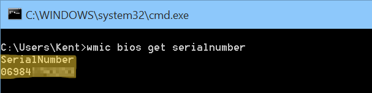

1. El método más fácil: revisa el equipo físicamente
La forma más rápida es buscar una etiqueta o un holograma pegado directamente en tu computadora.
Laptops
Mira en la base (la parte de abajo) del equipo.
Computadoras de escritorio
Busca en los costados o en la parte de atrás de la torre.
Equipos "todo en uno"
Generalmente, la etiqueta está en la parte trasera del monitor.
Verificación adicional: El holograma de seguridad
Busca un holograma de seguridad pegado en el equipo. Comúnmente lo encontrarás en la parte trasera, cerca de las ventilas o junto a la etiqueta del número de serie original.
2. Métodos desde el sistema (Windows)
Si no encuentras la etiqueta, puedes obtener el número usando comandos. Te presentamos dos opciones, ya que algunas computadoras pueden tener una de ellas deshabilitada.
Opción A: Usando PowerShell (recomendado)
- Haz clic en el botón de Inicio (el ícono de Windows en la esquina inferior izquierda) y escribe la palabra PowerShell.

- Copia el siguiente texto, pégalo en la ventana azul y presiona la tecla Enter:
Get-CimInstance -ClassName Win32_BIOS | Select-Object SerialNumber - El número de serie aparecerá debajo del comando que pegaste.
Opción B: Usando el símbolo del sistema (CMD)
- Haz clic en el botón de Inicio y escribe las letras CMD.

- En los resultados, haz clic en la aplicación que dice "Símbolo del sistema". Se abrirá una ventana con fondo negro.
- Copia el siguiente texto, pégalo en la ventana negra y presiona la tecla Enter:
wmic bios get serialnumber - El número de serie aparecerá en la siguiente línea.

Comparación de métodos
¿Qué significa "ver en BIOS/UEFI"?
Es el menú de configuración base de la computadora que se carga antes que Windows. Contiene información del hardware, pero es un método recomendado solo para usuarios con más experiencia técnica.